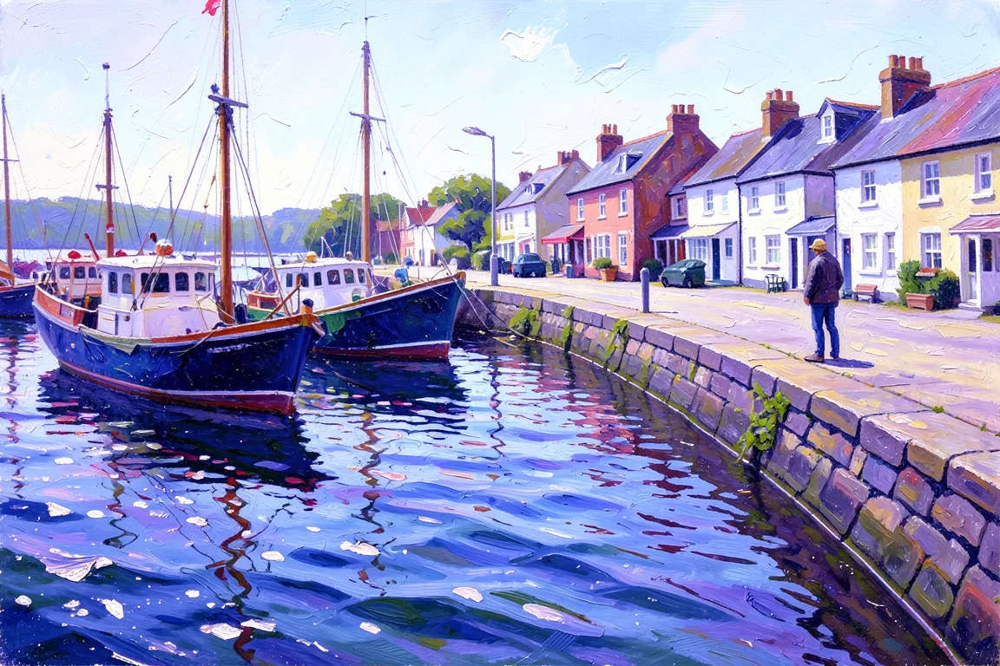

Живопись первого взгляда: быстрые разорванные мазки чистого цвета, записывающие меняющийся свет на современной сцене. Художники работают на воздухе, отказываются от контура и чёрной тени и дают глазу зрителя смешать цвет.

Главная идея
Картина записывает впечатление света на поверхности в один момент, а не предмет таким, каким его знают.
Принципы дизайна
Пишите сцену за один сеанс до 2 часов, чтобы свет был одним по всему холсту.
Кладите цвет отдельными видимыми касаниями 5–20 мм и пусть они смешиваются в глазу на расстоянии.
Пишите тень цветом: берите синий, фиолетовый или зелёный той же светлоты, что и освещённый фон, и не используйте чёрный.
Держите диапазон светлоты узким: большая часть картины лежит в пределах 3–4 ступеней из 10-ступенчатой шкалы.
Ставьте дополнительные пары рядом (оранжевое и синее, красное и зелёное), чтобы получить вибрацию света.
Кадрируйте как снимок: пусть край режет фигуры и предметы, а горизонт стоит высоко или низко.
Выбирайте сюжетом современный досуг: бульвары, реки, сады, вокзалы и кафе.
Антипаттерны
Чёрные контуры или жёсткие границы вокруг форм
Чёрные или коричневые студийные тени
Гладкая сплавленная невидимая поверхность
Тёмный низкотональный фон и один драматический луч света
Мифологические или исторические повествовательные сюжеты